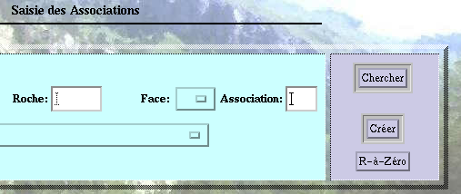
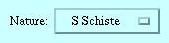
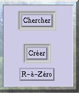
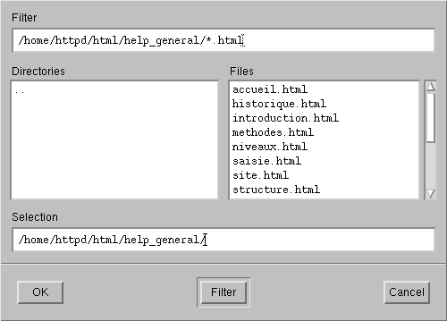
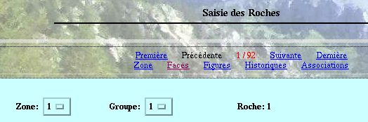

V- PRINCIPES GENERAUX D'UTILISATION
3- Principe des écrans de saisie
Les écrans de saisie (Zones, Roches, Faces, Figures protohistoriques, Gravures historiques, Associations) fonctionnent tous sur le même principe.

 UNE
PARTIE SAISIE:
elle est en bleu ici.
UNE
PARTIE SAISIE:
elle est en bleu ici.
Les listes déroulantes:
Cliquer sur le petit carré et la liste déroulante apparaît.
Cliquer sur le choix souhaité.

Cliquer dans le champs pour le sélectionner .
Taper directement ce que l'on souhaite.
La roche n'est la roche est
pas remarquable remarquable
 LA
PARTIE MENU DE DROITE:
elle est ici en violet.
LA
PARTIE MENU DE DROITE:
elle est ici en violet.
|  |
Il faut au moins saisir les clefs primaires des tables.
Il s'agit d'une création hiérarchique. On ne peut créer une association, une figure protohistorique, une gravure historique seulement si la face correspondante a déjà été saisie. De même la face ne peut être créée que si la roche correspondante l'a été précédemment, le roche ne pouvant être ajoutée seulement si la zone existe.
|
Une fois que la création a eu lieu, le menu ressemble
à
ce qui suit:
|
|
|
 LA
PARTIE PHOTO
LA
PARTIE PHOTO
Cette partie est présente pour chaque objet de la base de
données,
elle permet de sasir un ou plusieurs documents graphiques pour chaque
zone,
roche, face, figure, historique ou association, ainsi que leur
légende.
Il fonctionne de la façon suivante:
=> Les informations relatives à la zone, éventuellement à la roche, etc ..., sont automatiquement reportées dans cette écran.=> Choisir la taille que l'on désire pour le document, moyenne par défaut.
=> Parcourir l'arborescence du disque dur pour choisir le nom de fichier correspondant à l'image que l'on souhaite ajouter. Penser à modifier *.html en *.* pour avoir accès à tous les fichiers.

=> cliquer ensuite sur le bouton AJOUTER du premier écran.=> le bouton ANNULER du premier écran permet de remettre à zéro les différents champs de l'écran.
=> finalement le formulaire supplémentaire suivant apparaît en-dessous de la fiche de l'objet:
 LES
LIENS
LES
LIENS

Lorsque le résultat d'une recherche ou d'une création, en haut de chaque objet, que ce soit une zone, une roche, une face, une figure, une historique ou bien une association, apparaît une série de liens. Ces liens permettent de se rendre directement vers les écrans parents ou bien enfants de l'écran sur lequel la recherche a eu lieu.
Par exemple, pour afficher toutes les roches de la zoneI: il suffit
d'aller dans l'écran Roches, de mettre le champ zone à 1,
et de cliquer sur chercher. Alors à ce moment là on peut
voir apparaître le nombre de roches répondant aux
critères
de recherche en rouge, ici 92 puisque la première roche
affichée
à l'écran est la 1ère des 92.
Par exemple ici, lorsque on se trouve sur la roche Z1G1R1:
=> Zone => on va se rendre sur l'écran de saisie de la Z1.=> Faces => toutes les faces de la roche1 de la zone1 et du groupe 1 vont s'afficher les unes à la suite des autres.
=> Figures => toutes les figures de la roches Z1 G1 R1 vont s'afficher.
=> Historiques => toutes les gravures historiques de la roche Z1 G1R1 vont être affichées.
=> Associations => toutes les associations de la roche Z1 G1R1 vont être affichées.